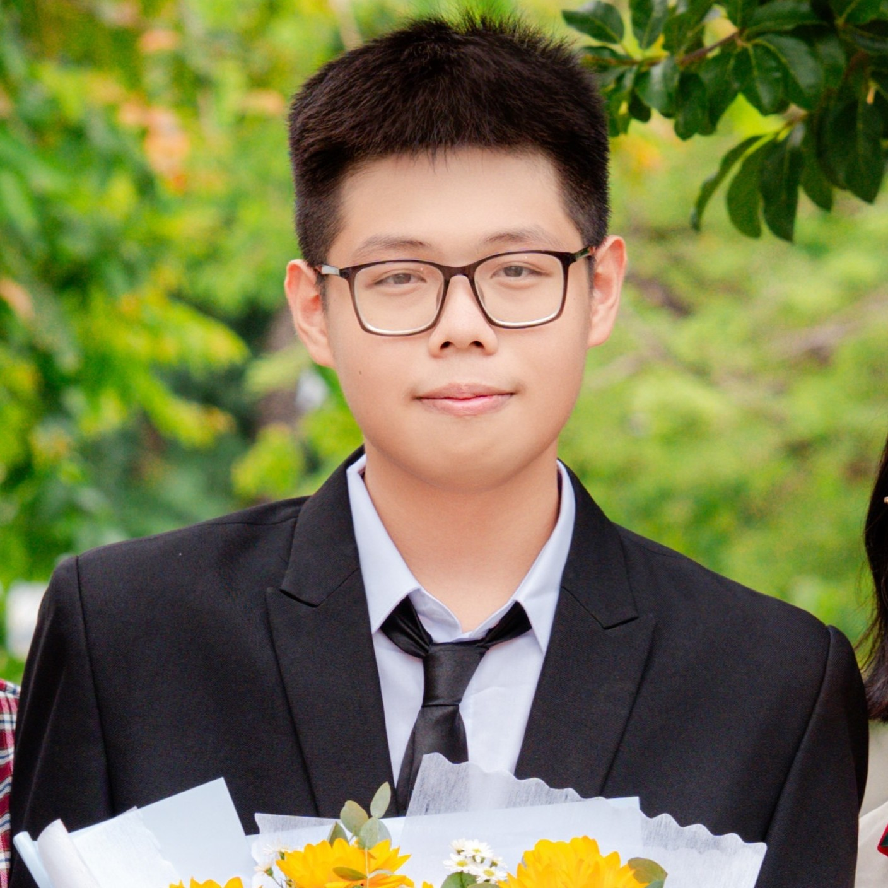

Từ ảnh đến không gian.
Tái tạo hình dạng 3D từ một ảnh, biến đổi mô hình và xử lý lưới hình học.
COMPUTER SCIENCE STUDENT · UIT
PORTFOLIO / 2026
NVXin chào, mình là
Tò mò về trí tuệ nhân tạo.
Hứng thú với những chiều không gian mới.
Mình khám phá giao điểm giữa Khoa học Máy tính, AI và đồ họa 3D — từ những thuật toán đầu tiên đến các ứng dụng công nghệ có thể chạm tới thực tế.
Khám phá dự án ↗Một chút về mình ↓Mình là Võ Nguyễn Nguyên Vũ, sinh năm 2008, hiện là sinh viên năm nhất ngành Khoa học Máy tính tại UIT — ĐHQG TP.HCM.
Xuất phát từ lớp chuyên Tin tại THPT Chuyên Lê Quý Đôn, mình quan tâm đến cách thuật toán có thể hiểu hình ảnh, tái tạo không gian và tạo nên những trải nghiệm học tập trực quan hơn.
Hướng đi của mình kết nối AI, Computer Vision, xử lý đồ họa 3D và phát triển ứng dụng công nghệ, đặc biệt trong lĩnh vực EdTech.
Tái tạo hình dạng 3D từ một ảnh, biến đổi mô hình và xử lý lưới hình học.
Hình học không gian, dữ liệu đồ thị và trực quan hóa các quan hệ toán học.
Quan tâm đến phân đoạn ảnh y tế, với các bộ dữ liệu Medical Segmentation Decathlon và LiTS.
Các hướng mình quan tâm và tiếp tục tìm hiểu, kết nối với nền tảng AI, Computer Vision và phát triển ứng dụng EdTech.
Ba hướng khám phá, cùng một tinh thần:
hiểu sâu hơn và tạo ra điều hữu ích.
Từ một góc nhìn đến một hình khối. Khám phá tái tạo và biến đổi mô hình 3D từ hình ảnh hoặc bản vẽ 2D.
Một đấu trường dành cho tư duy thuật toán: giải bài, thi đấu và theo dõi bảng xếp hạng trong môi trường lập trình trực tuyến.
Khám phá hình học không gian và cấu trúc dữ liệu đồ thị, kết nối xử lý toán học với trực quan hóa trên nền tảng web.
Từ dòng lệnh, mô hình học sâu
đến robot và hệ thống xử lý 3D.
Nền tảng để xây dựng, thử nghiệm và triển khai.
Hiểu hình ảnh, tái tạo không gian và khám phá AI cục bộ.
Kết nối thuật toán với chuyển động và tương tác thực tế.
Đại học Quốc gia TP. Hồ Chí Minh
Quy Nhơn, Gia Lai
Những dấu mốc trong hành trình
học hỏi, lập trình và sáng tạo.
Cuộc thi Sáng tạo Thanh thiếu niên, nhi đồng tỉnh Bình Định
Cuộc thi Tin học trẻ tỉnh Bình Định
Cuộc thi Khoa học Kĩ thuật tỉnh Gia Lai
KEEP LEARNING. KEEP BUILDING.
Bạn quan tâm đến AI, Computer Vision hay EdTech?
Kết nối với mình qua Facebook để trao đổi thêm nhé.